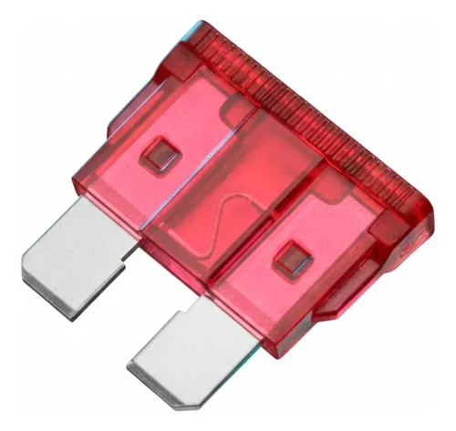
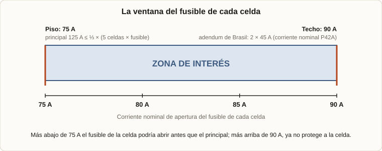
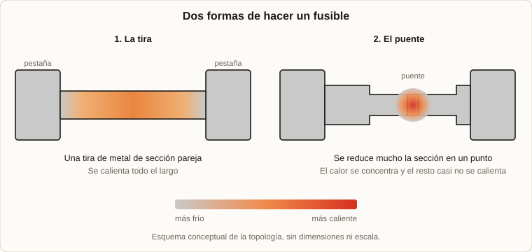
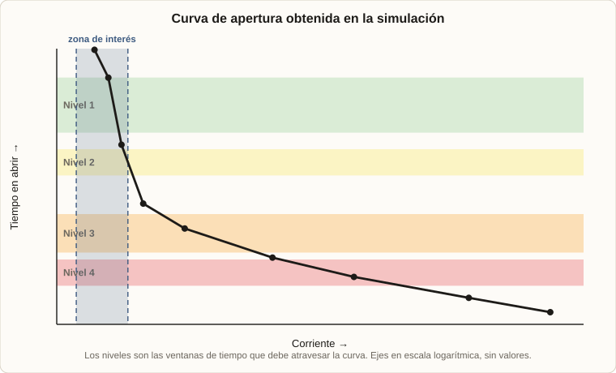
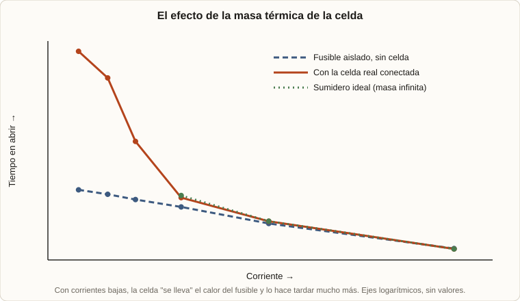

2026 · UTN Motorsport (Formula SAE) · Ansys · MATLAB
Fusibles a medida para el pack de baterías
Este es un resumen de lo que vengo haciendo con los fusibles del pack de baterías del auto eléctrico de UTN Motorsport. Es un trabajo en curso. Por decisión del equipo no dejo información específica del diseño (dimensiones, valores, geometrías ni resultados numéricos), pero sí cuento la idea general de lo que se elabora y cómo se llegó a ella.
1. El problema
2. Las cotas que impone la normativa
3. Primeros modelos y materiales
4. Dos diseños: la tira y el puente
5. Dónde estamos
1. El problema
El pack del auto está hecho de muchas celdas de ion-litio conectadas en paralelo y en serie. Si una celda falla, por ejemplo por un cortocircuito interno, puede empezar a calentarse sin control y arrastrar a sus vecinas: es lo que se llama thermal runaway (fuga térmica), y en un pack es uno de los peores escenarios posibles. Por eso las celdas en paralelo necesitan un fusible individual cada una, que desconecte a la celda que falla antes de que la corriente de las demás la termine de destruir.

Es la última medida de protección del pack: lo último que tiene que abrir. Antes están el fusible principal y el resto de las protecciones; si todo lo demás falló y una celda se está yendo de control, este fusible es lo único que queda entre esa celda y las otras.
Y no se puede comprar uno cualquiera. Tiene que abrir a una corriente y en un tiempo muy precisos, entrar físicamente en el pack y ser fácil de soldar. De ahí que lo estemos diseñando a medida.
2. Las cotas que impone la normativa
El diseño tiene dos límites, y cada uno sale de una regla distinta. El pack es de 5 celdas en paralelo (Molicel P42A), con un fusible principal de 125 A.
- Piso: 75 A. La regla del reglamento (EV.6.6.5) pide que el fusible principal sea menor o igual a un tercio de la suma de los fusibles de las celdas en paralelo. Con 5 celdas y un principal de 125 A, cada fusible de celda debe valer al menos
3 × 125 / 5 = 75 A. La idea es que el principal siempre abra primero. - Techo: 90 A. El adendum de Brasil, que modifica las reglas para la competencia de Brasil, limita el fusible de celda a el doble de la corriente nominal de la celda. La P42A tiene 45 A nominales, así que el techo es
2 × 45 = 90 A. Un fusible que aguantara más no protegería a la celda.

Dentro de esa ventana, queda decidir de qué material y con qué forma.
3. Primeros modelos y materiales
Los primeros modelos térmicos los armé en MATLAB. Eran modelos pobres, pero cumplían su objetivo: dar una idea del rango de valores con el que había que trabajar antes de meterse en simulaciones más caras. En ese camino fui probando y descartando materiales:
| Material | Qué pasó |
|---|---|
| Cobre | Se probó, pero disipa demasiado calor, lo que hace difícil que el fusible se caliente y abra, y además es un material difícil de trabajar en láminas tan finas. |
| Acero niquelado | Su punto de fusión se alcanzaba con corrientes muy bajas, lo que lo hacía inviable para estas baterías. |
| Ni200 (níquel puro) | Es el que finalmente elegimos. |
4. Dos diseños: la tira y el puente
La tira
Primero simulé en MATLAB una tira de Ni200 de sección pareja entre las dos pestañas. La curva que salió cumplía las normas, pero a tiempos largos (cuando el tiempo tiende a infinito) no cerraba en la corriente que necesitábamos. Además, era muy sensible a la construcción: pequeños cambios al fabricarla movían mucho el resultado. No nos terminó de convencer.
El puente
Por eso cambiamos de enfoque a un diseño que concentra el punto de fusión en un puente chico. Es el método que usan algunos fusibles comerciales: se reduce mucho la sección en un punto, de modo que el resto del metal casi no se calienta y hace falta menos energía, pero más localizada.

El puente tiene una contra clara: necesita herramientas de fabricación con más precisión y hay que considerar una incertidumbre de fabricación mayor, porque cualquier variación en una pieza tan chica cambia mucho dónde y cuándo abre.
Ese diseño lo estoy simulando en Ansys con un modelo térmico y eléctrico acoplado (el calentamiento por efecto Joule), incluyendo la celda real conectada. Para cada corriente se calcula cuánto tarda el fusible en abrir, y de ahí sale la curva de apertura, que tiene que atravesar unas ventanas de tiempo definidas por la norma.

5. Dónde estamos
Hoy estamos esperando poder validar este desarrollo: fabricar muestras y ensayarlas. Lo que esperamos es que, en la práctica, las curvas se corran respecto de la simulación. La razón es la masa térmica de los materiales: una celda conectada se "lleva" parte del calor del fusible, y eso cambia muchísimo cuánto tarda en abrir, sobre todo con corrientes bajas.

Por eso el plan es caracterizar esas masas térmicas con ensayos reales y usar los resultados para corregir el diseño final. Mientras tanto, la simulación nos da el punto de partida y nos dice qué parámetros importan más.